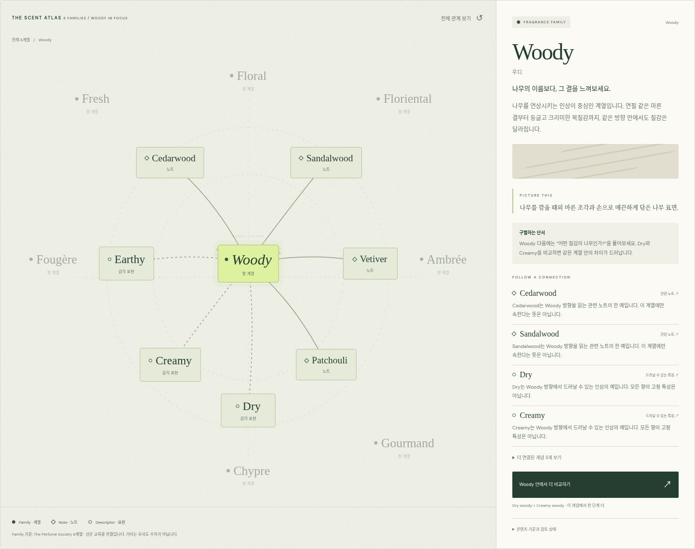
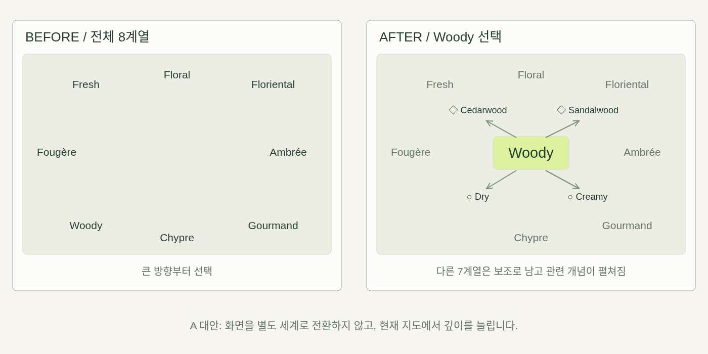
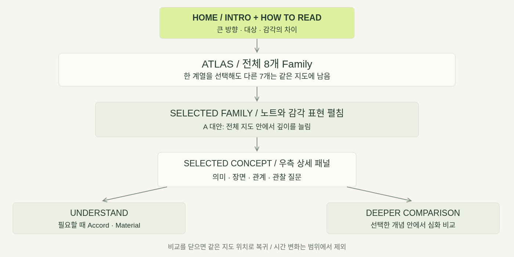
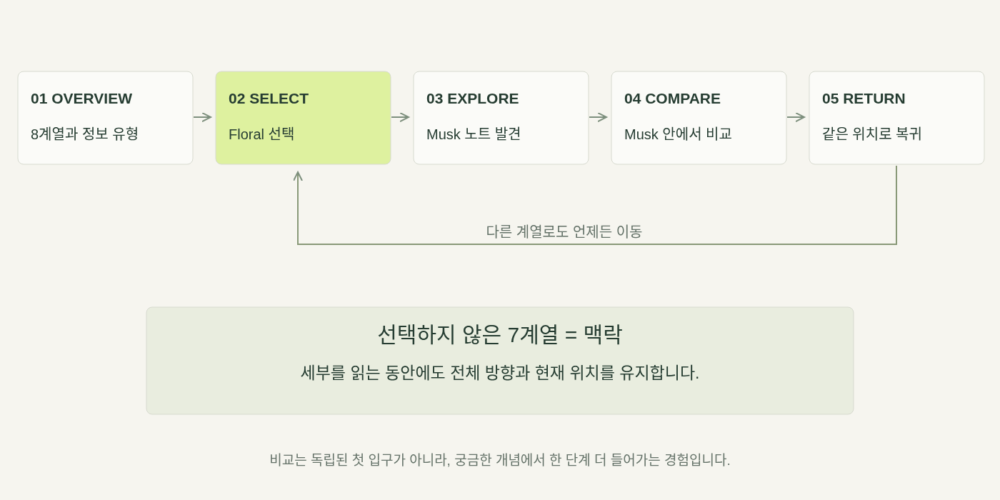
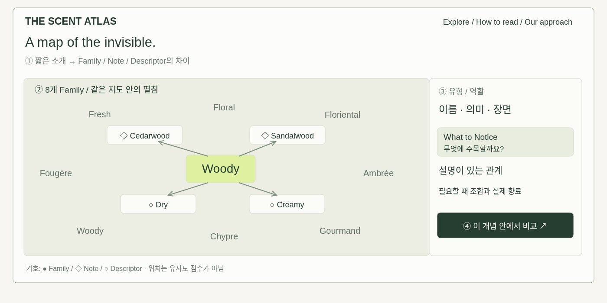
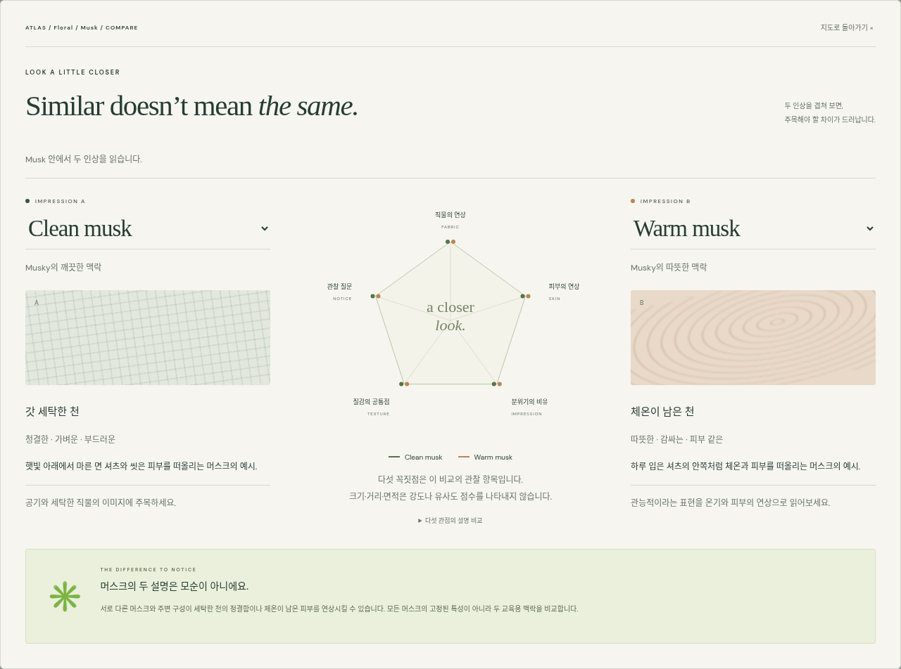
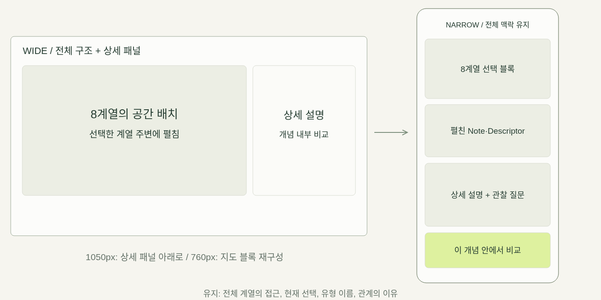

FRONT-END WEB / WEEK 06
The Scent
Atlas
Atlas
Discover how scents connect.
전체 향의 구조에서,
작은 차이와 관계를 발견하는 경험.
작은 차이와 관계를 발견하는 경험.

A 대안 / 같은 지도 안에서 펼치는 향의 언어
THE SCENT ATLAS / MIDTERM DESIGN PRESENTATION
01
01 / THE PROBLEM
단어는 함께 쓰이지만, 같은 정보는 아닙니다.
전체 방향, 구체적인 대상, 느껴지는 방식이 한 문장에 섞입니다.
● FAMILY
Woody
큰 방향은 알지만
어떤 나무의 인상인지 막연함
어떤 나무의 인상인지 막연함
◇ NOTE
Sandalwood
대상을 알아도
어떻게 느껴지는지 막연함
어떻게 느껴지는지 막연함
○ DESCRIPTOR
Creamy
부드럽다는 말과
노트 사이의 관계가 막연함
노트 사이의 관계가 막연함
질문: 무엇을 설명하는 단어이며, 어디에 주목하면 구별될까요?
THE SCENT ATLAS / MIDTERM DESIGN PRESENTATION
02
02 / CONCEPT & PREMISE
전체 구조를 남겨둔 채, 깊이 들어갑니다.
8계열 → 계열 선택 → 노트와 특징 → 상세 설명 → 필요한 심화 비교

THE A APPROACH
같은 지도 안에서 펼침
다른 7계열은 맥락으로 유지
비교는 선택한 개념 안에서
다른 7계열은 맥락으로 유지
비교는 선택한 개념 안에서
THE SCENT ATLAS / MIDTERM DESIGN PRESENTATION
03
03 / INTENDED EXPERIENCE
탐색 뒤에는 무엇을 새롭게 읽을까요?
FEEL
차분한 호기심
조용한 편집 공간
NOTICE
역할의 차이
계열·노트·표현 구분
DISCOVER
겹치는 특징
한 노트의 여러 면
UNDERSTAND
연결의 의미
동의어나 하위 분류가 아님
DO
직접 탐색
선택·연결·비교·복귀
“우디는 그냥 나무 향?” → “같은 방향에서도 마른 결과 매끈함을 따로 관찰할 수 있겠다.”
THE SCENT ATLAS / MIDTERM DESIGN PRESENTATION
04
04 / THE KNOWLEDGE MODEL
데이터는 다섯 유형. 화면은 필요한 깊이만.
다섯 가지를 동등한 메뉴나 하나의 카테고리 트리로 만들지 않습니다.
Family
큰 방향
Floral · Woody
지도 시작
Note
연상되는 대상
Rose · Musk
선택 후 펼침
Descriptor
질감과 인상
Dry · Creamy
관련 특징
Accord
조합으로 만드는 인상
Amber Accord
상세에서 공개
Material
실제로 구현하는 향료
Rose Absolute · Vanillin
필요할 때 설명
THE SCENT ATLAS / MIDTERM DESIGN PRESENTATION
05
05 / ORGANIZING THE INFORMATION
Type과 Facets를 분리합니다.
관련되어도, 같은 종류나 고정된 하위 분류는 아닙니다.
EXAMPLE 01
◇ Sandalwood
Type: Note
관련 방향: Woody
가능한 Facets: Creamy · Warm · Dry
관련 방향: Woody
가능한 Facets: Creamy · Warm · Dry
EXAMPLE 02
◇ Musk ≠ ○ Musky
Musk: 연상되는 노트
Musky: 관련 인상을 설명하는 표현
Clean · Powdery · Warm은 고정 특성이 아님
Musky: 관련 인상을 설명하는 표현
Clean · Powdery · Warm은 고정 특성이 아님
관계에는 종류와 이유를 저장합니다. ‘연관된다’는 선 하나로 설명을 대신하지 않습니다.
THE SCENT ATLAS / MIDTERM DESIGN PRESENTATION
06
06 / THE CLASSIFICATION CHOICE
처음 8계열은 하나의 기준으로 조직합니다.
The Perfume Society의 8계열 / 다른 체계는 비교 참고로 구분합니다.
Fresh
Floral
Floriental
Ambrée
Gourmand
Chypre
Woody
Fougère
Michael Edwards: 다른 세분화와 연속적 휠의 참고
원칙: 여러 체계를 섞어 하나의 공식 분류처럼 제시하지 않음
노트·표현의 연결과 공간 배치는 프로젝트의 교육용 설계
원칙: 여러 체계를 섞어 하나의 공식 분류처럼 제시하지 않음
노트·표현의 연결과 공간 배치는 프로젝트의 교육용 설계
THE SCENT ATLAS / MIDTERM DESIGN PRESENTATION
07
07 / REFERENCES & INSPIRATION
참고한 형식보다, 설계에 가져온 원칙.
The Perfume Society
8계열 기준과 원료·노트 용례
큰 방향과 실제 향료의 역할 구분
Michael Edwards
다른 기준의 세부 분류
일관된 기준과 다른 체계의 차이 설명
Fragrantica / Scent Verdict
노트·제품·공간 탐색
정의보다 관계를 먼저 읽는 경험
Explorable Explanations / 관찰 노트
조작으로 이해하는 설명
선택·펼침·주석에 정보의 역할 부여
제공된 업데이트 리서치에 기반한 분석 / 원문 접근 상태와 편집 범위는 부록에서 구분
THE SCENT ATLAS / MIDTERM DESIGN PRESENTATION
08
08 / MOOD & VISION BOARD
Quiet. Tactile. Connected. Curious.

종이 위의 관찰
가느다란 관계선
질감의 대비
조용한 발견
가느다란 관계선
질감의 대비
조용한 발견
기존 자체 생성 소재 보드.
실제 향료 사진이나 측정값 아님.
실제 향료 사진이나 측정값 아님.
THE SCENT ATLAS / MIDTERM DESIGN PRESENTATION
09
09 / VISUAL LANGUAGE
기존 지도와 비교 화면의 목소리를 유지합니다.
PAPER / #F6F5EF
PINE / #263D32
SELECT / #DEF19F
COMPARE B / #BC8653
A map of
the invisible.
the invisible.
Georgia serif / DM Sans + 한국어 sans
본문과 선택 표시의 대비를 유지
본문과 선택 표시의 대비를 유지
● Family ◇ Note ○ Descriptor
연두: 현재 관심 / 약화: 남아 있는 맥락
질감 이미지 + 장면 + What to Notice
펼침·이동의 목적: 현재 위치와 관계를 읽기
질감 이미지 + 장면 + What to Notice
펼침·이동의 목적: 현재 위치와 관계를 읽기
THE SCENT ATLAS / MIDTERM DESIGN PRESENTATION
10
10 / SITEMAP
전체에서 세부로, 정보의 깊이를 늘립니다.

THE SCENT ATLAS / MIDTERM DESIGN PRESENTATION
11
11 / USER FLOW
세부로 가도, 전체 위치를 잃지 않습니다.

THE SCENT ATLAS / MIDTERM DESIGN PRESENTATION
12
12 / WIREFRAMES
소개는 간결하게. 지도는 중심에.

THE SCENT ATLAS / MIDTERM DESIGN PRESENTATION
13
13 / THE ATLAS IN ACTION
Woody를 선택하면, 같은 지도 안에서 펼쳐집니다.
수정된 실제 웹사이트 캡처 / 다른 7계열은 남아 있습니다.
01 전체 8계열
02 선택한 계열 강조
03 관련 노트·표현 펼침
04 설명이 있는 관계
02 선택한 계열 강조
03 관련 노트·표현 펼침
04 설명이 있는 관계
THE SCENT ATLAS / MIDTERM DESIGN PRESENTATION
14
14 / DEEPER COMPARISON
Musk 안에서 더 궁금해질 때 비교합니다.
비교를 닫으면 같은 지도 위치로 돌아옵니다.

두 인상 카드
사례별 관찰 항목
임의의 점수 없음
구체적인 질문
지도 상태 보존
사례별 관찰 항목
임의의 점수 없음
구체적인 질문
지도 상태 보존
THE SCENT ATLAS / MIDTERM DESIGN PRESENTATION
15
15 / RESPONSIVE INTENTIONS
공간 관계를 읽는 순서로 바꿉니다.

키보드·터치·초점 복원 · 움직임 감소 설정 · hover에 필수 정보를 숨기지 않음
THE SCENT ATLAS / MIDTERM DESIGN PRESENTATION
16
APPENDIX A / DESIGN PROCESS
분류와 조직화의 선택을 설명합니다.
분류 체계가 여러 개
8계열 기준을 선택하고 다른 체계는 구분
일관된 탐색
정보 역할이 섞임
다섯 데이터 타입과 화면 구조 분리
혼동 감소
한 단어의 특징이 겹침
Type과 Facets를 분리해 다대다 연결
복합적인 인상 표현
처음부터 전문 정보가 많음
Accord·Material을 단계적으로 공개
탐색 부담 감소
세부에서 현재 위치를 잃음
A 대안으로 다른 7계열 유지
맥락 유지
THE SCENT ATLAS / MIDTERM DESIGN PRESENTATION
17
APPENDIX B / IMPLEMENTATION & FIELD NOTES
기능의 검증과 이해의 검증을 구분합니다.
PREPARED
8계열 · 5유형
42개 콘텐츠 예시
94개 설명이 있는 관계
Type / Facets 분리
Accord·Material은 상세에서
94개 설명이 있는 관계
Type / Facets 분리
Accord·Material은 상세에서
VERIFIED
브라우저 테스트 15개
전체와 모든 계열의 펼침
개념 내부 비교와 상태 복귀
320–1440px 레이아웃
키보드와 움직임 감소
개념 내부 비교와 상태 복귀
320–1440px 레이아웃
키보드와 움직임 감소
NEXT TO CHECK
사용자의 이해 변화
유형의 차이를 설명하는가?
전체 위치를 유지하는가?
다음 시향의 질문을 갖는가?
전문가가 용례를 검토
전체 위치를 유지하는가?
다음 시향의 질문을 갖는가?
전문가가 용례를 검토
범위 제외: 시간 변화 · 실제 조향 예측 · 자동 계열 판정 · 제품 추천 · 근거 없는 유사도 점수
THE SCENT ATLAS / MIDTERM DESIGN PRESENTATION
18
APPENDIX C / SOURCES
기준, 편집, 시각 자료의 근거를 구분합니다.
원문 새 접근: 프록시 403으로 제한 / 제공된 리서치와 편집 용례의 검토 상태를 표시
실제 화면 캡처와 배치도 구분 / 무드보드는 자체 생성한 감각 비유
거리·크기·색은 측정된 향의 강도나 유사도가 아닙니다.
실제 화면 캡처와 배치도 구분 / 무드보드는 자체 생성한 감각 비유
거리·크기·색은 측정된 향의 강도나 유사도가 아닙니다.
THE SCENT ATLAS / MIDTERM DESIGN PRESENTATION
19
APPENDIX D / FEEDBACK
탐색 뒤, 어디에 주목할지 말할 수 있나요?
01
Family · Note · Descriptor는 무엇이 다른가요?
02
Sandalwood가 Creamy의 하위 항목인가요?
03
Musk와 Musky는 어떤 관계인가요?
04
세부를 읽으며 다른 계열로 이동하기 쉬웠나요?
최종 목표: 전체 구조를 이해하고, 작은 차이를 관찰할 기준을 얻는 것.
THE SCENT ATLAS / MIDTERM DESIGN PRESENTATION
20
APPENDIX E / REQUIREMENTS
요구사항과 제출 자료를 연결했습니다.
Concept / Premise
3장 / PROJECT-PROPOSAL.md
Intended Experience
4장 / Feel · Notice · Discover · Understand · Do
References / Inspiration
8장·19장 / REFERENCE-NOTES.md
Mood / Vision Board
9장 / assets/moodboard.png
Visual Language
10장 / 기존 화면의 색상·서체·기호·강조
Sitemap
11장 / assets/sitemap.svg
User Flow
12장 / assets/user-flow.svg
Wireframes
13장 / wireframe-desktop·expansion·compare
Responsive Intentions
16장 / wireframe-responsive.svg
THE SCENT ATLAS / MIDTERM DESIGN PRESENTATION
21